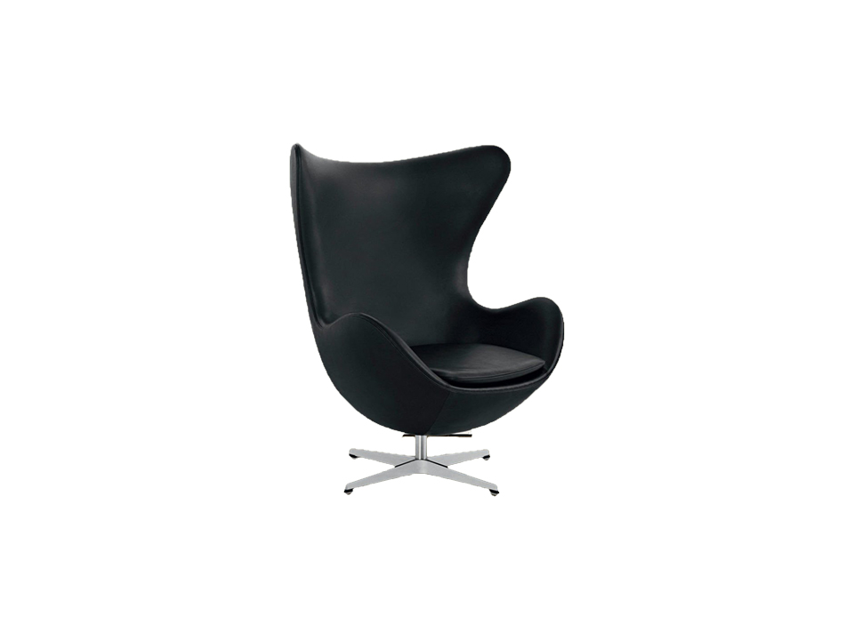

Indret din stue med et dansk klassisk design ikon

Hvis du for alvor vil have et møbel, der udstråler dansk design, er Ægget utvivlsomt et af de største danske design ikoner. I slutningen af 1950’erne designede Arne Jacobsen SAS Royal Hotel (nu Radisson Blu Royal Hotel) i København ned til mindste detalje. I denne forbindelse skabte han Ægget, Svanen, Svanesofaen, Serie 3300 og Dråben og skrev sig for alvor ind i dansk designhistorie. Møblet er anerkendt på verdensplan og er et eftertragtet samleobjekt for mange.
Du kan sætte to af Ægget stolene sammen med et lille bord, for at skabe det perfekte sted til at læse avisen i ro om mag.